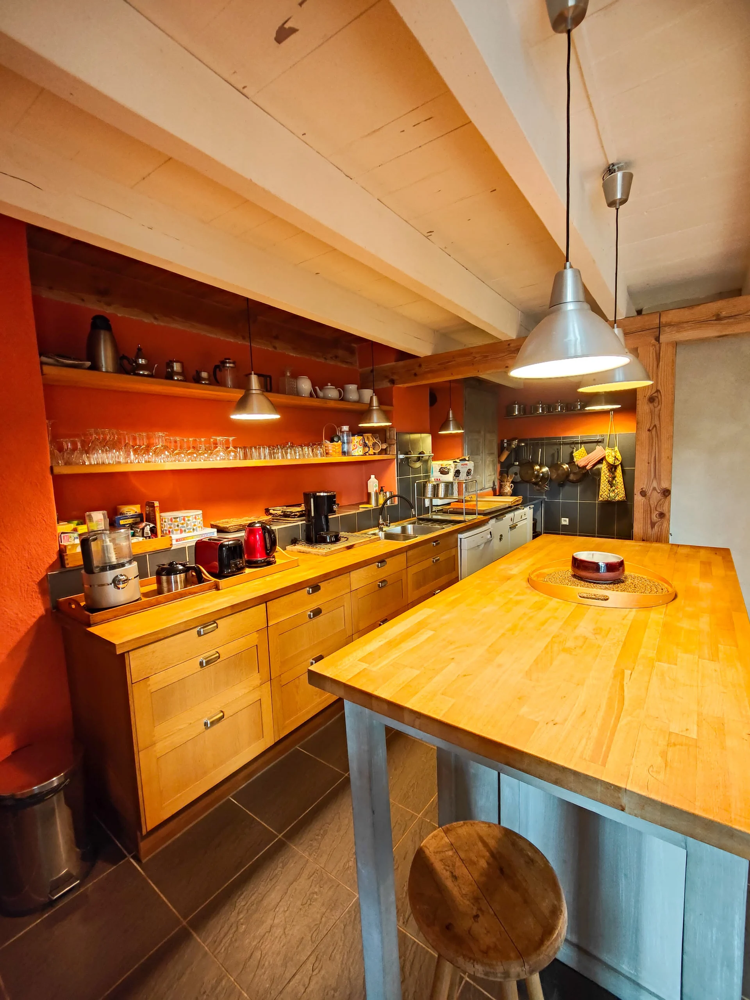
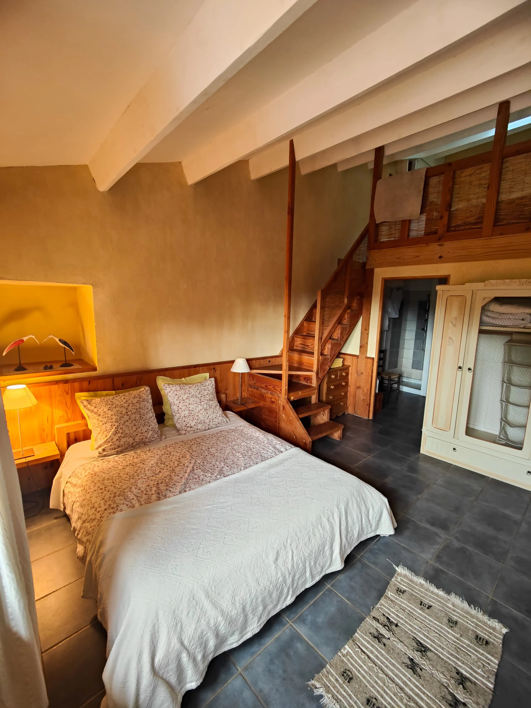
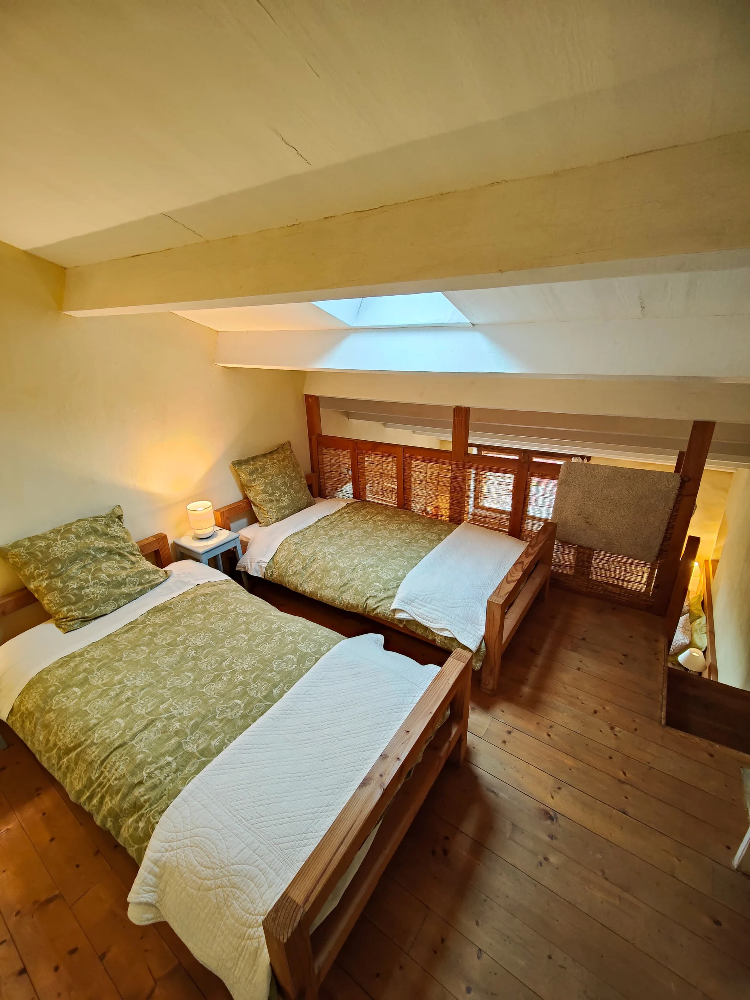
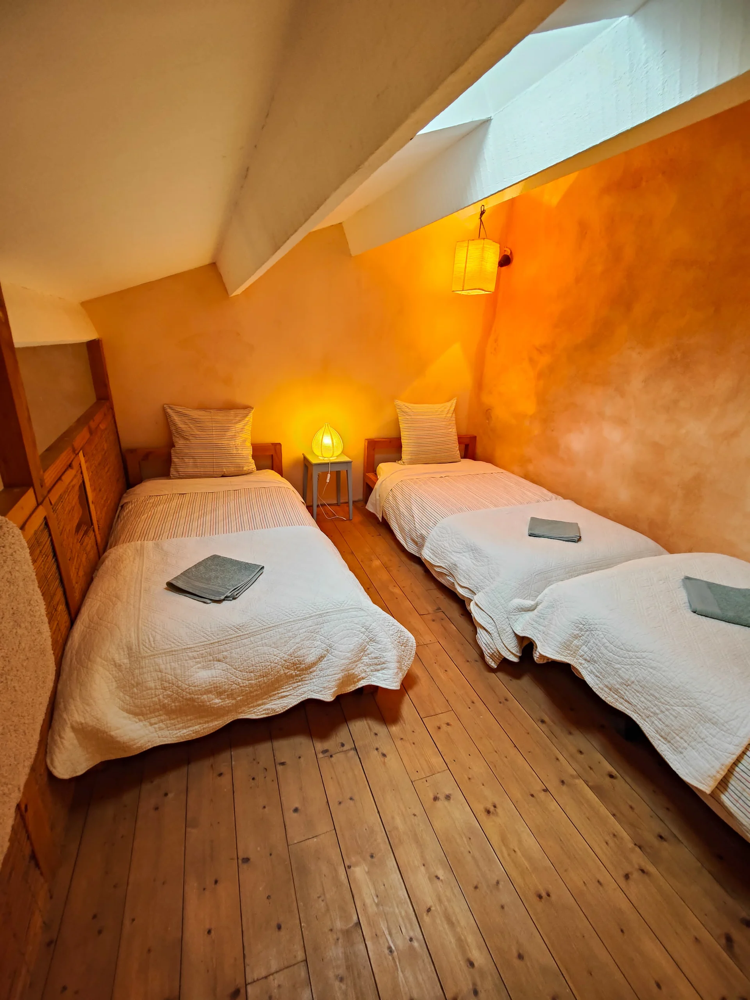

Gîte Terrasses des Boutisses
Au coeur des Monts d'Ardèche
Le grand gîte
9 personnes - 2 chambres - 2 mezzanines - 2 salles de bain
Des espaces de vie conviviaux
Au rez-de-chaussée, plusieurs espaces s’offrent à vous :
- Une grande terrasse panoramique avec une vue magnifique sur les Monts d’Ardèche
- Un coin cheminée pour des soirées chaleureuses
- Une salle à manger accueillante autour de sa grande table
- Un espace bibliothèque
- Une cuisine ouverte entièrement équipée, idéale pour cuisiner et partager ensemble
Des couchages confortables avec vue
À l’étage, le gîte dispose de :
- Deux chambres, chacune avec un lit double
- Deux mezzanines comprenant respectivement 2 et 3 lits simples
- Une salle de bain avec toilettes par chambre
- Une magnifique vue sur la vallée depuis chaque chambre
Deux banquettes supplémentaires (190 × 75 cm) sont également disponibles pour des couchages d’appoint.
Galerie






